Differences in Means: Surveys and Experiments
Survey
Our population and estimand
$$ \newcommand{X}{} \newcommand{Y}{} % A hex digit after # inside a macro body is eaten by build-time expansion, so digit-leading hexes spell # via .
$$
| j | 1 | 2 | 3 | 4 | 5 | 6 | 7 | 8 | 9 | 10 |
|---|---|---|---|---|---|---|---|---|---|---|
| w_j | \color{#F8766D}0 | \color{#F8766D}0 | \color{#F8766D}0 | \color{#F8766D}0 | \color{#F8766D}0 | \color{#00BFC4}1 | \color{#00BFC4}1 | \color{#00BFC4}1 | \color{#00BFC4}1 | \color{#00BFC4}1 |
| y_j | \color{#F8766D}0 | \color{#F8766D}1 | \color{#F8766D}0 | \color{#F8766D}1 | \color{#F8766D}0 | \color{#00BFC4}1 | \color{#00BFC4}1 | \color{#00BFC4}0 | \color{#00BFC4}1 | \color{#00BFC4}1 |
- We will taste a salty and fruity bar and report a preference.
- \textcolor{#00BFC4}{y_j=1} for salty, \textcolor{#F8766D}{y_j=0} for fruity.
- But before we do that, some of us — those who choose — will eat a piece of bitter dark chocolate.
- We call the groups that do or don’t do this subpopulations.
- We say \textcolor{#00BFC4}{w_j=1} if person j ate the dark chocolate.
- We say \textcolor{#F8766D}{w_j=0} if they did not.
- Our estimand is a difference in means of these subpopulations.
\Delta \;=\; \textcolor{#00BFC4}{\mu(1)}-\textcolor{#F8766D}{\mu(0)} \qwhere \begin{aligned} \textcolor{#00BFC4}{\mu(1)} &= \frac{1}{m_1}\sum_{j \,:\, w_j=1} y_j \\ \textcolor{#F8766D}{\mu(0)} &= \frac{1}{m_0}\sum_{j \,:\, w_j=0} y_j \end{aligned}
Our survey design and estimator
We will use stratified sampling:
- we fix how many to sample from each subpopulation,
- then sample within each one separately, without replacement.
We take numbered cards within our own subpopulation,
- shuffle a deck for each, and take the top three.
The difference in sample means is our estimator:
\hat\Delta=\textcolor{#00BFC4}{\hat\mu(1)}-\textcolor{#F8766D}{\hat\mu(0)}.
Interval estimation


- That gives a point estimate. How do we get an interval estimate?
- An interval estimate depends on the sampling distribution of \hat\Delta.
- We will have to collect responses from everybody else.
- With the whole population written down, we can rerun the survey from it:
- shuffle the two decks again, take three more from each subpopulation,
- and get another estimate.
- What do we see?
Unbiasedness
- The sampling distribution is centered on \Delta. How did we know?
- From the two subpopulations separately:
- each sample mean is unbiased for its own subpopulation’s mean,
- and an expectation of a difference is the difference of expectations.
Could we calculate the width?
- What is the variance of our estimate?
The two samples are drawn independently, so
\operatorname{Var}(\hat\Delta)=\operatorname{Var}\{\textcolor{#00BFC4}{\hat\mu(1)}\}+\operatorname{Var}\{\textcolor{#F8766D}{\hat\mu(0)}\}, \qquad \operatorname{Var}\{\hat\mu(w)\}=\frac{\sigma^2(w)}{n_w}\frac{m_w-n_w}{m_w-1}.
What does this tell us about choosing our sample sizes?
- Enlarging one sample leaves the other subpopulation’s term alone.
- However many we sample from one, a small sample in the other still limits our precision.
- The gray curve is the normal approximation with that variance.
- At three per subpopulation it is poor.
How can we estimate this distribution more precisely?
| p | \textcolor{#F8766D}{\hat\mu(0)} | \textcolor{#00BFC4}{\hat\mu(1)} | \hat\Delta |
|---|---|---|---|
| \textcolor{#073B4C}{\frac{3}{10}\cdot\frac{3}{5}=\frac{9}{50}} | \textcolor{#F8766D}{2/3} | \textcolor{#00BFC4}{2/3} | \textcolor{#073B4C}{0} |
| \textcolor{#EF476F}{\frac{6}{10}\cdot\frac{3}{5}=\frac{18}{50}} | \textcolor{#F8766D}{1/3} | \textcolor{#00BFC4}{2/3} | \textcolor{#EF476F}{1/3} |
| \textcolor{#EF476F}{\frac{3}{10}\cdot\frac{2}{5}=\frac{6}{50}} | \textcolor{#F8766D}{2/3} | \textcolor{#00BFC4}{1} | \textcolor{#EF476F}{1/3} |
| \textcolor{#118AB2}{\frac{1}{10}\cdot\frac{3}{5}=\frac{3}{50}} | \textcolor{#F8766D}{0} | \textcolor{#00BFC4}{2/3} | \textcolor{#118AB2}{2/3} |
| \textcolor{#118AB2}{\frac{6}{10}\cdot\frac{2}{5}=\frac{12}{50}} | \textcolor{#F8766D}{1/3} | \textcolor{#00BFC4}{1} | \textcolor{#118AB2}{2/3} |
| \textcolor{#06D6A0}{\frac{1}{10}\cdot\frac{2}{5}=\frac{2}{50}} | \textcolor{#F8766D}{0} | \textcolor{#00BFC4}{1} | \textcolor{#06D6A0}{1} |
We sample the subpopulations separately,
- so each row’s probability p is the product of its two sample-mean probabilities.
Adding the rows that share a difference gives the distribution exactly:
P(\hat\Delta=d)=\sum_{\textcolor{#00BFC4}{\hat\mu(1)}-\textcolor{#F8766D}{\hat\mu(0)} \,=\, d} p.
The sampling distribution for any population
- Change the responses in either subpopulation, or either sample size, and run it again.
Can we always use this survey design?
- Why or why not?
- To use stratified sampling, we need to know which subpopulation every person is in, that is w_j, in advance.
- Sometimes we do. Sometimes we need to call the person up to find their subpopulation.
- In the latter case, we’ll need some new math. We’ll do it later.
Experiment
Our experiment
- We will taste the same two candies.
- The prime is different: coconut milk chocolate.
- One shuffle of the whole class’s cards picks six people to eat it.
- The groups are randomly assigned. That is what an experiment is.
Again our estimate is the difference in the two sample means.
\hat\Delta=\textcolor{#00BFC4}{\hat\mu(1)}-\textcolor{#F8766D}{\hat\mu(0)}.
How do you calibrate a confidence interval? We simulate our study.
Repeating the experiment
| j | 1 | 2 | 3 | 4 | 5 | 6 | 7 | 8 | 9 | 10 |
|---|---|---|---|---|---|---|---|---|---|---|
| w_j | \color{#00BFC4}1 | \color{#F8766D}0 | \color{#00BFC4}1 | \color{#F8766D}0 | \color{#00BFC4}1 | \color{#00BFC4}1 | \color{#F8766D}0 | \color{#00BFC4}1 | \color{#F8766D}0 | \color{#00BFC4}1 |
| y_j | \color{#00BFC4}1 | \color{#F8766D}0 | \color{#00BFC4}1 | \color{#F8766D}1 | \color{#00BFC4}0 | \color{#00BFC4}1 | \color{#F8766D}0 | \color{#00BFC4}1 | \color{#F8766D}0 | \color{#00BFC4}1 |
As always, we collect the population’s responses and simulate our study.
| j | 1 | 2 | 3 | 4 | 5 | 6 | 7 | 8 | 9 | 10 |
|---|---|---|---|---|---|---|---|---|---|---|
| y_j | ? | ? | \color{#00BFC4}1 | ? | ? | \color{#00BFC4}1 | \color{#F8766D}0 | ? | ? | \color{#00BFC4}1 |
Potential outcomes and treatment effects
| j | 1 | 2 | 3 | 4 | 5 | 6 | 7 | 8 | 9 | 10 |
|---|---|---|---|---|---|---|---|---|---|---|
| y_j(0) | \color{#F8766D}0 | \color{#F8766D}1 | \color{#F8766D}0 | \color{#F8766D}0 | ||||||
| y_j(1) | \color{#00BFC4}1 | \color{#00BFC4}1 | \color{#00BFC4}0 | \color{#00BFC4}1 | \color{#00BFC4}1 | \color{#00BFC4}1 |
| j | 1 | 2 | 3 | 4 | 5 | 6 | 7 | 8 | 9 | 10 |
|---|---|---|---|---|---|---|---|---|---|---|
| y_j(0) | 0 | \color{#F8766D}0 | 1 | \color{#F8766D}1 | 0 | 0 | \color{#F8766D}0 | 1 | \color{#F8766D}0 | 0 |
| y_j(1) | \color{#00BFC4}1 | 1 | \color{#00BFC4}1 | 1 | \color{#00BFC4}0 | \color{#00BFC4}1 | 0 | \color{#00BFC4}1 | 1 | \color{#00BFC4}1 |
We say that \textcolor{#F8766D}{y_j(0)} and \textcolor{#00BFC4}{y_j(1)} are person j’s preferences without and with the prime.
We observed y_j(w_j), one of the two. A new assignment asks for the other.
We define the average treatment effect as the mean individual difference:
\Delta=\frac{1}{m}\sum_{j=1}^m \{\textcolor{#00BFC4}{y_j(1)}-\textcolor{#F8766D}{y_j(0)}\}.
- How do we complete it? How do we simulate?
- In this particular context, we can just ask. And then we can run our replication.
- But do you completely buy this?
- How do you really know how eating the chocolate or not ahead of time would have impacted your experience?
- But do you completely buy this?
- How do you really know how eating the chocolate or not ahead of time would have impacted your experience?
- Imagine this was a vaccine.
- If you don’t give someone a vaccine in an experiment and then they get sick,
- you can’t run it again
- and see if the vaccine would have prevented them from getting sick.
- Because they’ve already developed some immunity.
Simulating the experiment
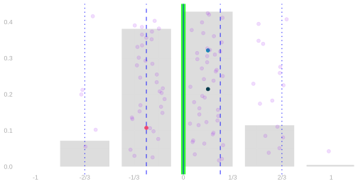
- If you’re going to simulate these things, you need the potential outcome population.
- We can do this a couple times,
- with a couple different ways of filling things in,
- and plot the randomization distributions.
- This is a thing you can do if and only if you know all the potential outcomes,
- which you don’t.
The randomization distribution for any population
- Change either response for anybody, or the number treated, and run it again.
A pitfall
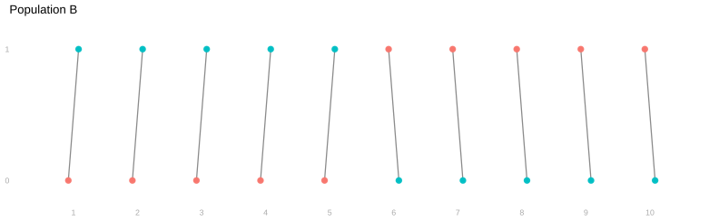
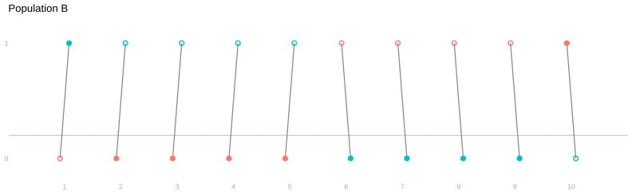
- Ten people, five assigned the prime.
- Each has one response with the prime and one without.
- Under each condition, both populations hold five salty and five fruity.
- Both have average treatment effect zero.
- The distribution of observed outcomes, as pairs, is the same.
- But the spread of the estimate is different.
- In A the estimate runs from -1 to 1; in B it is zero under every assignment.
- That’s not saying we can’t get an interval estimate.
- That’s just saying we can’t do it by simulating the population we observed in the experiment.
- So: can we do this using our observations? Yes and no.
- Our estimate is going to stay unbiased.
- So the question boils down to whether we can do spread.
- We can estimate an upper bound on spread and overcover,
- but we can’t calibrate for exact coverage.